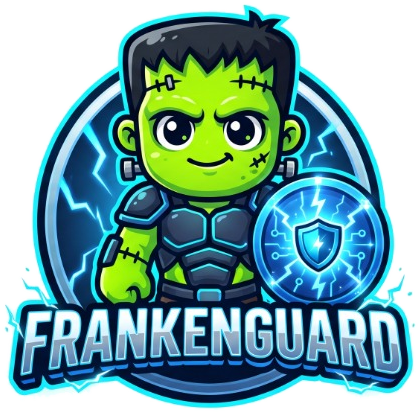

AWS CloudTrail Telemetry • Kiro Steering • Tree-sitter HCL AST Surgery
/exorcise-iam
in Kiro) for autonomous MCP audit, or click
⚡ Execute AST Exorcism.
Visualizing declared Terraform IAM permissions against runtime CloudTrail usage